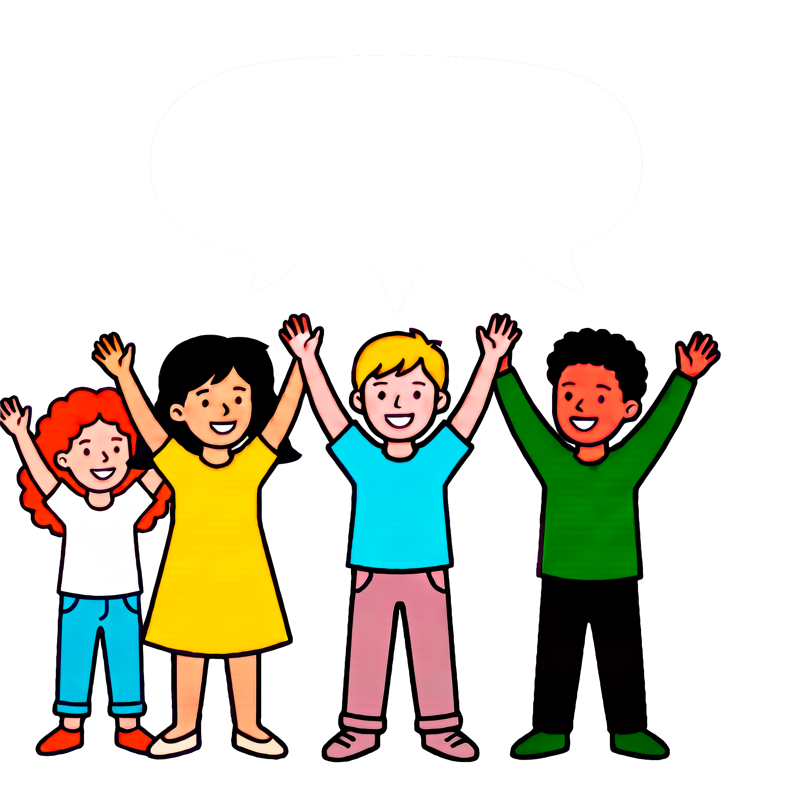
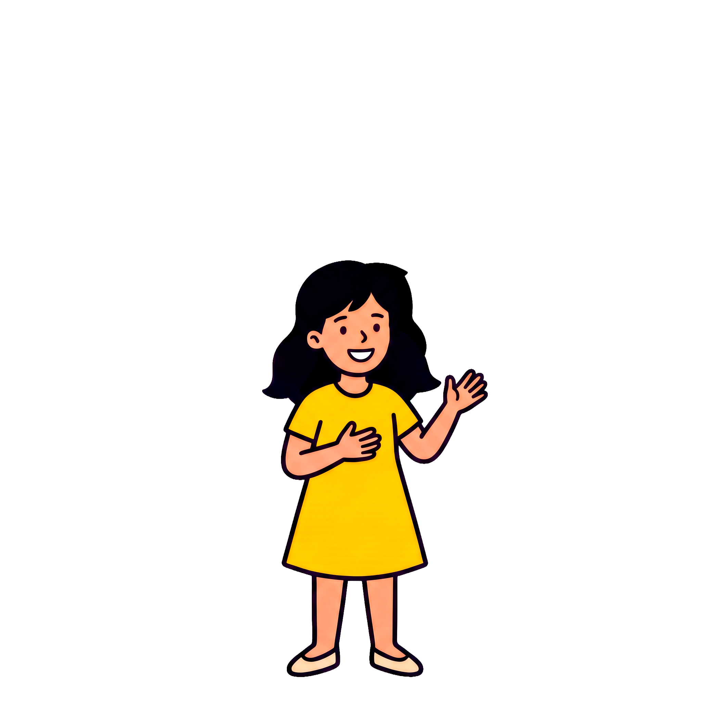
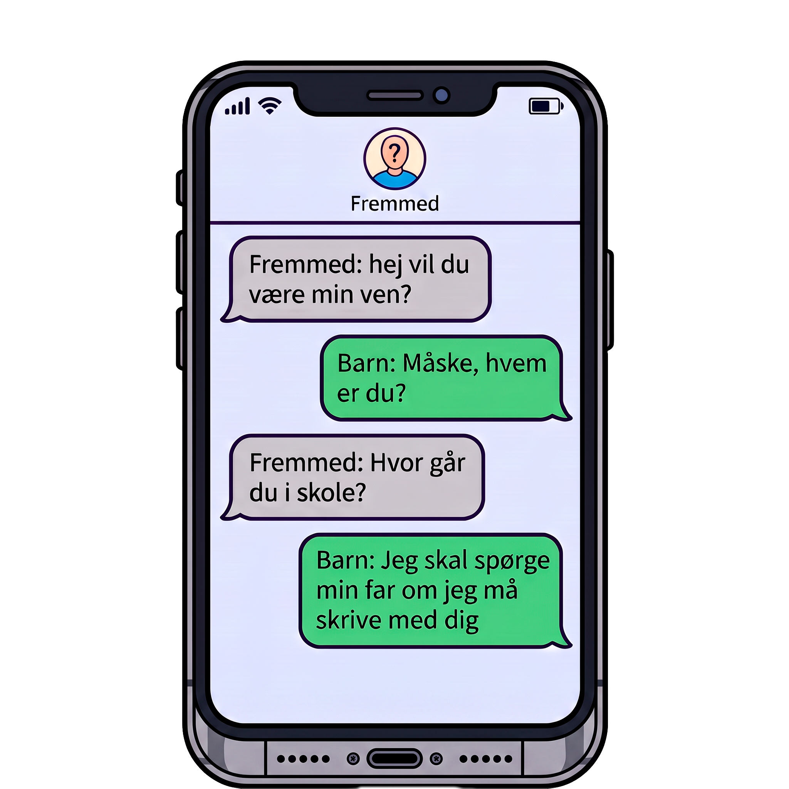
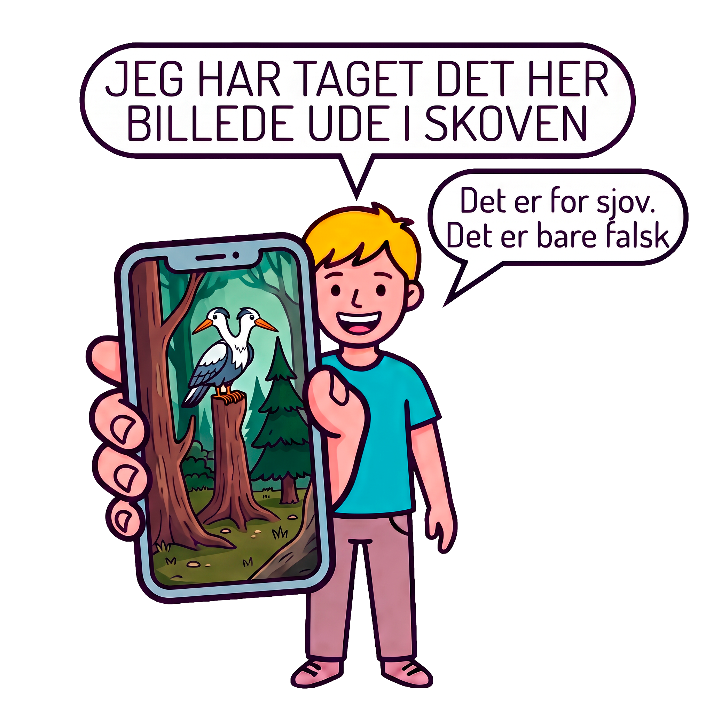
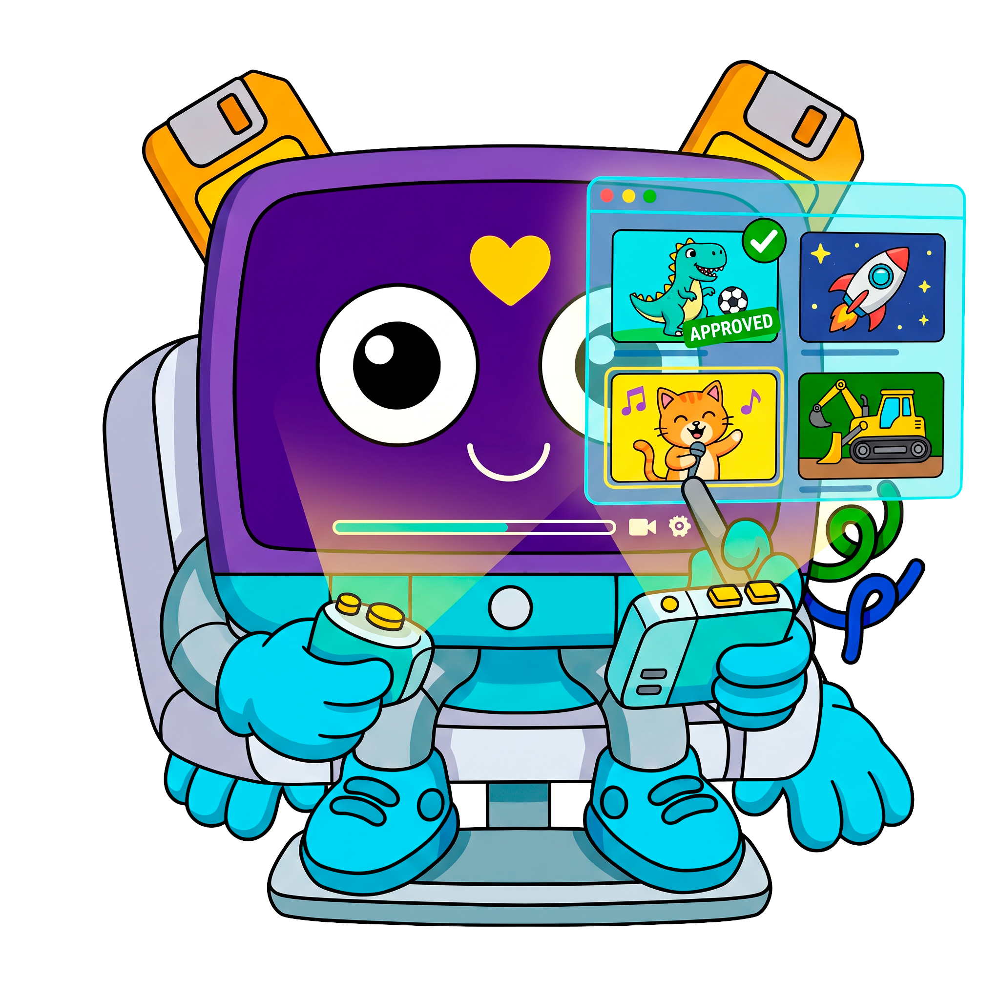
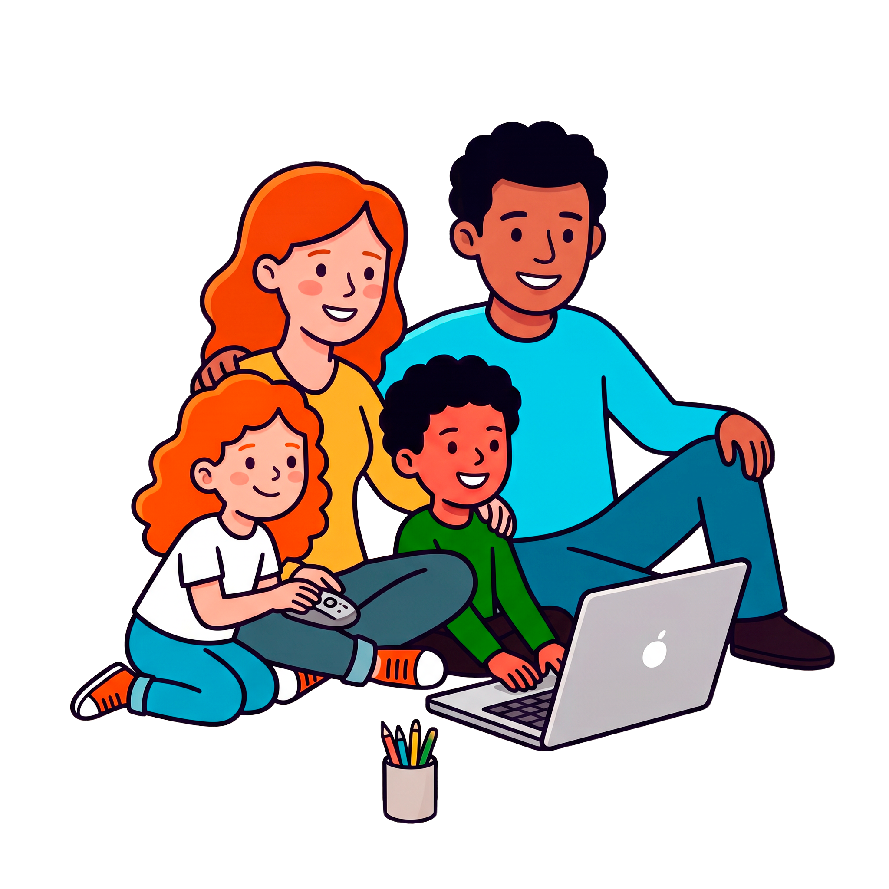

Hej!
Kan du godt li' at spille fede spil på nettet, skrive med vennerne eller se sjove videoer? Det kan vi også! Rul ned og se, hvordan du kan have det sjovt og passe på dig selv online!

Pas på dine oplysninger
Har du prøvet at lave en profil i et spil eller på en app? Måske har du skrevet dit navn, valgt et profilbillede eller fortalt lidt om dig selv?
Men vidste du, at ikke alle oplysninger er gode at dele med andre? Nogle ting skal du holde for dig selv.
Hvad skal du passe på med at dele?
- Dit fulde navn
- Hvor du bor eller hvor du er
- Dit telefonnummer
- Din skole
- Dit CPR-nummer
- Dine adgangskoder
- Billeder, som viser private ting om dig eller din familie
Her er et spørgsmål
Du spiller et nyt spil, og en person du ikke kender ude i verden, spørger dig, hvilken skole du går på. Er det en god idé at fortælle det?
Se et godt råd
Du behøver ikke svare på noget du ikke har lyst til. Hvis du er i tvivl om, hvad du må dele, eller nogen skriver noget du ikke forstår, eller noget der bare er mærkeligt, kan du spørge en voksen, du er tryg ved

Når nogen skriver til dig
Du kan få beskeder fra venner, klassekammerater og mennesker, du ikke kender. Det sker både i spil, på sociale medier og i besked apps.
De fleste beskeder er helt almindelige. Men nogen gange kan en besked føles ubehagelig eller få dig til at føle dig presset.
Vær opmærksom, hvis nogen:
- Beder dig om billeder
- Spørger om noget privat eller noget upassende
- Siger, at du ikke må fortælle andre om jeres samtale
- Bliver ved med at skrive, selvom du siger nej
- Får dig til at føle dig utryg eller utilpas
Hvad kan du gøre?
Du må gerne lade være med at svare. Du kan blokere personen, anmelde beskeden og fortælle det til en voksen.
Husk dette:
Du har ikke gjort noget forkert, hvis nogen skriver noget ubehageligt til dig. Du behøver ikke klare det alene. Det er altid en god idé at fortælle det til en voksen.

Kan du stole på det, du ser?
På nettet kan du finde billeder, videoer og historier om næsten alt. Men det betyder ikke, at alt er rigtigt.
Nogle billeder og videoer kan være ændret, så de viser noget, der aldrig er sket. Andre kan være lavet med kunstig intelligens også kaldet AI.
Hvad er AI?
AI er en slags computer-teknologi, der blandt andet kan lave billeder, tekster og videoer. Nogle gange kan resultatet se så ægte ud, at det kan være svært at se forskel.
Stop op og tænk
Hvis du ser en video, der virker helt vild eller næsten for mærkelig til at være sand, så prøv at undersøge den, før du tror på den eller deler den.
Sådan kan du undersøge det
- Hvem har delt billedet eller videoen?
- Kan du finde den samme historie andre steder?
- Virker noget ved billedet eller videoen mærkeligt?
- Du kan spørge en voksen om det er ægte

Hvorfor ser du lige det her?
Har du prøvet at se én video om et bestemt spil, og bagefter dukker der pludselig en masse lignende videoer op?
Det er ikke helt tilfældigt. Mange apps og hjemmesider prøver at gætte, hvad du gerne vil se.
Hvordan fungerer det?
Når du ser, liker eller søger efter noget, kan appen bruge det til at foreslå mere af det samme. Det sker ved hjælp af noget, der kaldes en algoritme.
En algoritme er kort sagt nogle regler, som en computer følger for at vælge, hvad den viser dig.
Er det altid godt?
Det kan være godt, men det er det ikke altid. Du kan ende med at se de samme typer videoer igen og igen. Derfor er det godt at huske, at der findes meget andet på nettet end det, appen foreslår.
Hvis du ser noget, du ikke kan lide, kan du prøve at gå videre til en anden video. Nogle apps bruger nemlig det, du ser og reagerer på, til at foreslå nyt indhold.
Et godt tip:
Prøv at være nysgerrig og opsøg også andre emner. Du kan ofte ændre dine anbefalinger eller indstillinger sammen med en voksen.

Gør din konto sikker
Har du en konto på sociale medier? Så er det vigtigt at passe på den. Ellers kan andre måske få adgang til den.
Sådan passer du på din konto:
- Lav en adgangskode som andre ikke let kan gætte. Du kan få dine forældre til at hjælpe dig med at huske den.
- Det er også en god idé at bruge forskellige adgangskoder.
- Man skal ikke dele sin adgangskode med sine venner.
- Vær forsigtig med koder, du får på sms eller e-mail.
- Spørg en voksen om hjælp hvis du er i tvivl eller vil have hjælp til ekstra sikkerhed.
Hvad er ekstra sikkerhed?
Nogle apps kan bede om en ekstra kode, når du logger ind. Det betyder, at det ikke er nok kun at kende din adgangskode. Det gør det sværere for andre at komme ind på din konto. Det er godt.
Husk dette:
Hvis du får en besked om, at nogen prøver at logge ind på din konto, skal du ikke bare trykke på et tilfældigt link. Spørg en voksen, hvis du er usikker.